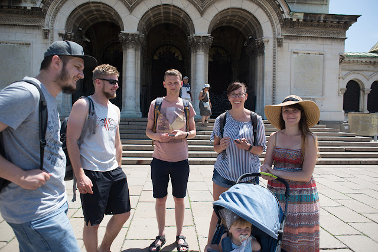
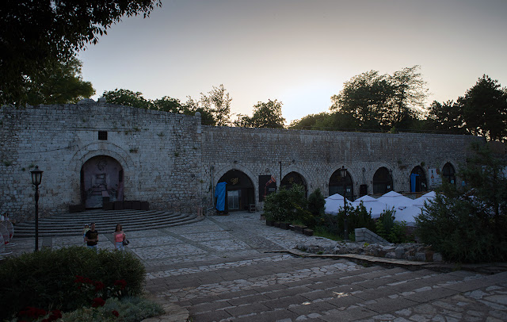
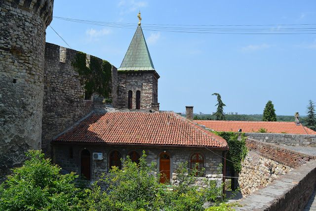
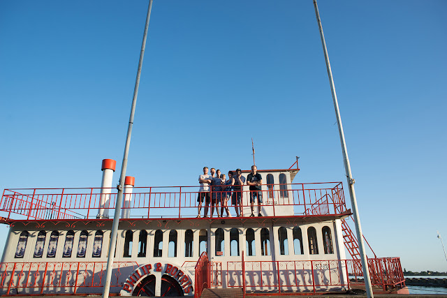
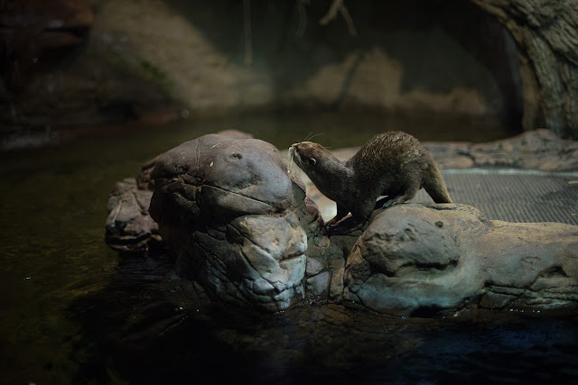
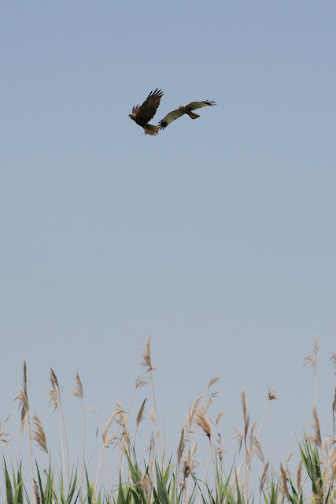
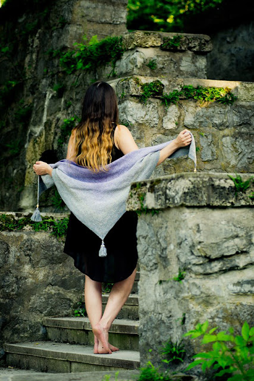

Plan wycieczki
Zwiedzone miejsca
- San Francisco
- Alcatraz
- Point Arena Lighthouse
- Glass Beach
- Lassen Volcanic National Park
- Redwood National Park
- Crater Lake National Park
- Toketee Falls
- Smith Rock State Park
- Trillium Lake
- Multnomah Falls
- Portland
- Olympic National Park
- Ruby Beach
- Big Cedar Tree
- Seattle
- Yellowstone National Park
- Yellowstone Bear World
- Bonneville Salt Flats
- Salt Lake City
- Arches National Park
- Capitol Reef National Park
- Bryce Canyon National Park
- Zion National Park
- Zapora Glen Canyon
- Horseshoe Bend
- Grand Canyon National Park
- Zapora Hoovera
- Las Vegas
- Route 66
- Joshua Tree National Park
- San Diego
- Los Angeles
- Universal Studios Hollywood
- Sequoia National Park
- Yosemite National Park
- Googleplex
Czas wycieczki: 22 dni
Skład osobowy: 3 dorosłych, 2 letni Bąbel
Przejechane kilometry: około 11 tysięcy
Przybliżony koszt na osobę: 10 000 PLN, zawiera ceny:
- przelotu z bagażem rejestrowanym
- noclegów
- wynajmu samochodu, paliwa, opłat za drogi i parkingi, międzynarodowego prawa jazdy
- ubezpieczenia turystycznego, wizy, starterów
- wejściówek do: Alcatraz, Parków Narodowych (karta American Beauty), Muzeum Lotnictwa w Seattle, Space Needle, Universal Studio
Bilety na wyjazd we wrześniu kupiliśmy w marcu za 1600 PLN (tam i z powrotem, wliczając bagaż rejestrowany) na stronie flipo.pl. Noclegi rezerwowaliśmy przez Airbnb oraz Booking i zdecydowanie polecamy ten pierwszy sposób. Wyższy standard za niższą cenę. Lot z Berlina (Tegel) do San Francisco z przesiadką w Helsinkach. Do Berlina dojechaliśmy samochodem i zostawiliśmy go na darmowym parkingu na Saatwinkler Damm. Wynajeliśmy samochód Nissan Armada v8 4x4, ponieważ nie chcieliśmy mieć problemów z dojechaniem we wszystkie miejsca na liście. Będąc w miastach w USA wybieraliśmy głównie płatne parkingi blisko miejsc, które chcieliśmy zobaczyć. Jeżdżąc samochodem wszędzie spotkacie skrzyżowania ze znakami STOP, na których obowiązuje zasada, kto się pierwszy zatrzymał, ten pierwszy jedzie. Dodatkowo, jeśli nie ma zakazu, na światłach można skręcać w prawo, nawet jeśli jest czerwone (taka domyślna strzałka warunkowa). Dobrze też zaopatrzyć się w kartę kredytową, ponieważ nie wszędzie zapłacicie debetówką lub Revolutem. Jeśli chodzi o ilość gotówki, mieliśmy ze sobą około 150 dolarów na osobę i to wystarczyło z nadwiązką. Praktycznie w każdym z odwiedzonych miejsc moglibyśmy spędzić więcej czasu, ale zależało nam ta tym, aby w te trzy tygodnie zobaczyć jak najwięcej różnych rzeczy.
Film z wycieczki możecie zobaczyć tutaj(jeśli macie możliwość, obejrzyjcie w 4K 😊).
Plan wycieczki
Szczegóły planu
Dzień pierwszy
- 17:30 - przylot, sprawy organizacyjne
- nocleg w Pinole
Dzień drugi
- 9:30 - rejs na Alcatraz i Angel Island
- 12:00 - zwiedzanie San Francisco
- nocleg w Pinole
Dzień trzeci
- 8:00 - wyjazd
- 11:00 - Bowling Ball Beach, zwiedzanie do 12:00 (niezrealizowany punkt)
- 12:15 - Point Arena Lighthouse and Museum, zwiedzanie do 12:45
- 14:00 - Glass Beach, zwiedzanie do i obiad do 15:00
- 20:00 - nocleg w Redding
Dzień czwarty
- 6:30 - wyjazd
- 7:30 - Lassen Peak, Lake Helen, zwiedzanie do 10:30
- 15:30 - Redwood National Park (w rzeczywistości byliśmy 2 godziny później z powodu problemów pogodowych na Lassen Peak)
- 21:30 - nocleg w Kerby
Dzień piąty
- 07:00 - wyjazd
- 9:00 - Crater Lake (zwiedzanie miało być do 11 ale z powodu zimy zamknięta była droga biegnąca naokoło jeziora)
- 12:00 - Toketee Falls, zwiedzanie do 13:00 (dojechaliśmy później z tych samych powodów, co wyżej)
- 15:30 - Smith Rock State Park, zwiedzanie do 17:30
- 18:30 - nocleg w Warm Springs
Dzień szósty
- 8:00 - wyjazd
- 9:00 - Trillium Lake, zwiedzanie do 9:30
- 11:00 - Multnomah Falls, zwiedzanie do 13:00
- 15:00 - Portland, zwiedzanie do 19:00
- 20:30 - nocleg w Vancouver
Dzień siódmy
- 6:00 - wyjazd
- 09:30 - Olympic National Forest
- 22:00 - nocleg w Tukwilla
Dzień ósmy
- 8:00 - wyjazd
- 9:00 - fabryka Boeinga, zwiedzanie do 11:00
- zwiedzanie Seattle do końca dnia
- nocleg w Tukwilla
Dzień dziewiąty
- 8:00 - wyjazd
- 12:00 - przyjazd do Spokane, przerwa do 12:30
- 15:30 - przerwa w Missuola
- 20:00 - nocleg w West Yellowstone
Dzień dziesiąty
- 7:00 - wyjazd
- 08:30 - Yellowstone
Dzień jedenasty
- 08:00 - wyjazd
- 10:00 - Old Faithfull Geyser, zwiedzanie do 12:00
- 12:30 - Grand Prismatic Spring
- 14:30 - Yellowstone Bear World, zwiedzanie do 16:00
- 20:00 - nocleg w Tremonton
Dzień dwunasty
- 07:00 - wyjazd
- 09:30 - Salt Flat Bonneville, zwiedzanie do 10:00
- 12:00 - Natural Muzeum of Utah, zwiedzanie do 14:00
- zwiedzanie Salt Lake City do 16:00
- 20:00 - nocleg w Price
Dzień trzynasty
- 08:00 - wyjazd
- 09:30 - Arches National Park, zwiedzanie do 12:30
- 14:30 - Capitol Reef National Park, zwiedzanie do 17:30
- 20:00 - nocleg w Bryce City
Dzień czternasty
- 08:00 - Bryce Canyon National Park, zwiedzanie do 12:00
- 13:30 - Zion National Park, zwiedzanie do 19:00
- 20:30 - nocleg w Page
Dzień piętnasty
- 08:00 - Glen Canyon, zwiedzanie do 10:30
- 13:00 - Grand Canyon National Park, zwiedzanie do 20:00
- 21:00 - nocleg w Valle
Dzień szesnasty
- 08:00 - wyjazd
- 11:00 - Zapora Hoovera, zwiedzanie do 12:30
- 13:30 - Las Vegas, zwiedzanie do wieczora i nocleg
Dzień siedemnasty
- 07:00 - wyjazd (wyjechaliśmy prawie 2 godziny później i z tego powodu San Diego zwiedzaliśmy po zmroku
- 10:00 - Joshua Tree National Park, zwiedzanie do 13:00
- 15:30 - zwiedzanie San Diego i nocleg
Dzień osiemnasty
- 07:00 - wyjazd
- 10:00 - Los Angeles, zwiedzanie do wieczora i nocleg
Dzień dziewiętnasty
- zwiedzanie Universal Studio, Beverly Hills i Santa Monica
- 20:00 - nocleg w Los Angeles
Dzień dwudziesty
- 06:00 - wyjazd
- 09:00 - Sequoia National Park, zwiedzanie do 18:00
- 20:00 - nocleg w Coarsegold
Dzień dwudziesty pierwszy
- 08:00 - wyjazd
- 08:30 - Yosemite, zwiedzanie do 17:00
- 19:00 - nocleg w Sonora
Dzień dwudziesty drugi
- 9:00 - wyjazd
- 12:00 - Googleplex, zwiedzanie do 13:00
- 14:00 - ogarnięcie samochodu, przyjazd na lotnisko i.. do domu
Plan wycieczki
Trasa
Zwiedzanie
SAN FRANCISCO
o długiej podróży: 6 godzin samochodem do Berlina, 2 godzinny lot do Helsinek i 11 godzinny do San Francisco, nareszcie jesteśmy! Pierwsze późne popołudnie upłynęło na dopinaniu formalności związanych z wynajmem samochodu (Alamo), kupnie starterów (T-Mobile). Na miejsce noclegu dojechaliśmy późno ale i tak obudziliśmy się kolejnego dnia o 3 więc, żeby nie marnować czasu, skoczyliśmy na zakupy do sklepu Walmart - o 4 jest praktycznie pusty. Po przebiciu się przez poranne korki (są tutaj specjalne pasy dla samochodów z 3+ pasażerami) dotarliśmy do Pier 33 skąd odpływała nasza wycieczka do Alcatraz i na Angel Island. Więzienną wyspę można zwiedzać na własną rękę. Najpierw wybraliśmy się do budynku więzienia, omijając pozostałe miejsca, ponieważ nie byliśmy pewni, czy wystarczy nam czasu, żeby zobaczyć wszystko. Więzienie zwiedza się z audio przewodnikiem i trzeba przyznać, że robi wrażenie. Nie spodziewałam się takich małych cel i takich warunków życia. Nic dziwnego, że nikt tam nie chciał trafić. Trafiliśmy też na strażnika, który prezentował, w jaki sposób działa otwieranie cel. Po wyjściu szybki spacer po pozostałych miejscach i wsiedliśmy na statek, którym popłynęliśmy na Angel Island. Tam przywitał nas bardzo mocny wiatr i przejażdżka, na trasie której można było zobaczyć zarówno naturę, jaka zadomowiła się na wyspie, jak i zabytkowe militarne budowle z czasów wojny secesyjnej. Ostatnim punktem było zwiedzanie miasta. Zjedliśmy obiad w restauracji "jak z filmów" (wielkie porcje, nie byliśmy w stanie zjeść wszystkiego) i ruszyliśmy dalej. W jednej chwili jesteśmy w dzielnicy portowej, w następnej pośrodku wysokich wieżowców, z samolotem ciągnącym reklamę ponad ich szczytami, by finalnie skończyć w Chinatown. Każda część ma swój niepowtarzalny klimat a wszystkie łączą wszechobecne wzgórza (i schody, więc jeśli zwiedzacie z dzieciakiem w wózku, przygotujcie się na noszenie - lub na porady mieszkańców, którzy widząc nas z wózkiem idących w stronę schodów podchodzili i podpowiadali nam inną drogę).

Zwiedzanie
WYBRZEŻE: POINT ARENA LIGHTHOUSE I GLASS BEACH
Ruszamy na północ! W planach oprócz punktów wymienionych wyżej mieliśmy jeszcze Bowling Ball Beach, na której kamienie uformowały się jak kule do kręgli, ale gdy zapytaliśmy miejscowego o drogę okazało się, że fale są dzisiaj zbyt wysokie i przykryły całą plażę. Generalnie pogoda nas nie rozpieszczała: większość podróży wybrzeżem minęła nam w gęstej mgle. Kiedy dojechaliśmy do Point Arena Lighthouse mgła ustąpiła ale za to pojawił się silny wiatr. Na plaży niedaleko jaskini można spotkać lwy morskie. Ostatnim miejscem przed noclegiem była Glass Beach (śmietnisko, które stało się obszarem chronionym), gdzie oprócz zbieraczy kolorowych kamieni na plaży spotkaliśmy oswojone wiewiórki.


Zwiedzanie
LASSEN VOLCANIC PARK I REEDWOOD
Na początku wyjście na Lassen Peak zapowiadało się świetnie pod kątem pogody. Jednak gdy dojechaliśmy do początku szlaku rozpętała się prawdziwa śnieżyca. Chłopaki postanowili ruszyć na szczyt tak czy inaczej a ja z małą poczekałyśmy w samochodzie na trochę lepszą pogodę i ruszyłyśmy na szlak około godzinę później. Śnieg przestał padać, mgła się rozeszła i można było podziwiać niesamowite widoki - przynajmniej z tego miejsca, do którego my dotarłyśmy. Chłopaki, z powodu mgły w wyższych partiach wulkanu, nie są w stanie jednoznacznie stwierdzić, czy dotarli na szczyt czy jednak nie. Po zejściu zatrzymaliśmy się jeszcze na chwilę nad Lake Helen i potem obraliśmy kurs na Reedwood. Niestety wyjście na Lassen Peak zajęło dłużej niż planowaliśmy i w Reedwood udało się przejść tylko jednym szlakiem: Tall Trees Grove z olbrzymimi sekwojami. Jeśli chcecie się tam wybrać, pamiętajcie żeby wcześniej odwiedzić Visitor Center i pobrać bezpłatne pozwolenie z kodem do kłódki, na którą zamknięty jest szlaban na drodze dojazdowej.


Zwiedzanie
CRATER LAKE, TOKETEE FALLS I SMITH ROCK STATE PARK
Podczas jazdy do jeziora kraterowego las na odcinki kilku mil zmienił z jesiennego na zimowy, a gdy dotarliśmy na szczyt, zima była już w pełni. Z tego powodu zamknięta została droga prowadząca naokoło jeziora więc musieliśmy zmienić nasze plany, które początkowo obejmowały zatrzymywanie się w punktach widokowych na tej zamkniętej drodze właśnie. Od lokalnych mieszkańców dowiedzieliśmy się, że w tym roku śnieg pojawił się tam wyjątkowo wcześnie. Trzeba jednak przyznać że jezioro w zimowej scenerii robi niesamowite wrażenie. Zwłaszcza, kiedy człowiek wyobrazi sobie jak potężna była góra przed wybuchem - i w gruncie rzeczy jak potężny był sam wybuch, który doprowadził krajobraz do takiego stanu. Dojście do Toketee Falls zabrało nas w zupełnie inną porę roku. Do wodospadu prowadzi zielony, bardzo klimatyczny szlak. Pomiędzy zarośniętymi mchem głazami i drzewami kryją się kamienne schodki i tak dochodzimy do platformy widokowej, która jest zbudowana na drzewie, dookoła pnia. Na parkingu, gdzie zaczyna się szlak można też zobaczyć wielkie, drewniane i przeciekające rury które są ciekawym elementem krajobrazu. No i w końcu Smith Rock State Park. Mieliśmy tylko godzinę, żeby go zobaczyć i to zdecydowanie za mało: park oferuje bardzo dużo szlaków, miejsc do wspinaczki i wspaniałych widoków - my zobaczyliśmy zaledwie ułamek z tego wszystkiego. Na koniec dnia spotkała nas niespodzianka: okazało się, że nasz nocleg znajduje się w środku indiańskiego rezerwatu w Warm Springs. Cały domek pełen był tematycznych akcentów (jak wycieraczka z napisem “I love my tribe”) i książek opisujących historię mieszkających tutaj ludzi.


Zwiedzanie
TRILLIUM LAKE, MULTNOMAH FALLS I PORTLAND
Rano dojechaliśmy nad Trillium Lake, nad którym góruje Mt Hood. Przy ładnej pogodzie góra pięknie odbija się w jeziorze, my jednak tym razem nie mieliśmy szczęścia: szczyt był cały w chmurach i nic nie wskazywało na to, że to się może zmienić więc ruszyliśmy dalej do Multnomah Falls. Wodospad znajduje się przy rzece Columbia, która zaskakuje swoją szerokością. Można go zobaczyć z dołu a także z góry, prowadzi tam prosty i krótki szlak. W Portland zajrzeliśmy na Pioneer Square South po drodze mijając pierwszy na świecie sklep Nike, odwiedziliśmy klęczącą Portlandię i w końcu dotarliśmy do punktu, który interesował mnie najbardziej: kilkupiętrowej, największej księgarni na świecie: Powell's City of Books. Ukoronowaniem dnia były donuty w Blue Star Donuts z których słynie Portland.


Zwiedzanie
Ruiny Twierdzy Czerwen
Zwiedzanie skalnych cerkwi poszło nam trochę szybciej, niż myśleliśmy, więc po przejrzeniu przewodnika postanowiliśmy zobaczyć ruiny twierdzy Czerwen. Po pokonaniu schodów rozciągnął się przed nami pozostałości miasteczka. Charakterystyczne miejsca są dobrze opisane, i choć trzeba użyć nieco wyobraźni, warto się tu zatrzymać. Nie tylko dla samego miasteczka ale też dla widoków które otaczają ten skalisty cypel.

Zwiedzanie
Kamienny Las I Warna
Po drodze do Warny (w końcu nad morzem!) zatrzymaliśmy się jeszcze w kamiennym lesie, czyli zgrupowaniu kamiennych kolumn. Trzeba pamiętać, aby zostawiając samochód na parkingu, nie pozostawić na widoku żadnych cennych rzeczy. Po za skałami, których powstanie stanowi zagadkę, można tam zobaczyć świstaki, które co jakiś czas ciekawsko obserwowały nas zza kamieni. W Warnie, po wskoczeniu do morza, przespacerowaliśmy się Parkiem Nadmorskim. Udało się nam tam trafić na koncert bułgarskiej muzyki na żywo 😍.


Zwiedzanie
Nesebyr I Burgas
Nesebyr to położony na półwyspie architektoniczny i archeologiczny rezerwat. Jeśli jesteście w okolicy i chcecie zobaczyć bardzo dobrze zachowane średniowieczne miasteczko - to koniecznie musicie tutaj przyjechać. Krążąc ciasnymi uliczkami wśród drewnianych domków można co chwilę odnaleźć, zachowane lepiej lub gorzej, zabytki. W Burgas zatrzymaliśmy się tylko na nocleg oraz popołudniowe wyjście na plażę.

Zwiedzanie
Skansen W Etar
Skansen stworzony został na wzór małego miasteczka. Idąc główną ulicą, można nie tylko zobaczyć bułgarskie budynki z minionej epoki, ale też przyjrzeć się, jak dawniej wytwarzano na przykład biżuterię czy tkano dywany. W części budynków można spotkać rzemieślników a w części przewodników, którzy opowiadają historię oraz przeznaczenie danego budynku.

Zwiedzanie
Buzłudża
Na szczycie góry można znaleźć relikt komunizmu - stary, zniszczony i zapomniany pomnik. Wybudowany z rozmachem, teraz jest jedynie cieniem przeszłości - w tym momencie nie można nawet wejść do środka. Dotarcie tam nie jest trudne, ponieważ pod samo wejście prowadzi asfaltowa droga.

Zwiedzanie
Płowdiw
Początkowo planowaliśmy tylko nocleg w tym miejscu - ale na szczęście wybraliśmy się na wieczorny spacer. Stare miasto w Płowdiwie warto zobaczyć przede wszystkim z dwóch powodów: charakterystycznych, rozszerzających się ku górze domków i niesamowitego teatru antycznego. Nie spodziewaliśmy się, że będzie w takim dobrym stanie, a w połączeniu z hipodromem (gdzie można zejść i usiąść na starożytnych trybunach) tworzy unikalną parę.

Zwiedzanie
Sofia
W Sofii od początku można zobaczyć, jak mieszają się kultury i religie. Podczas 10 minutowego spaceru minęliśmy synagogę, cerkiew, meczet i kościół katolicki. Można śmiało stwierdzić, że zwiedzanie tego miasta polegało głównie na turystyce sakralnej - ale biorąc pod uwagę ilość takich budynków, nie mogło być inaczej. Największe wrażenie zrobił na nas sobór św. Aleksandra Newskiego - trzeba obowiązkowo wejść do środka i poczuć klimat tego miejsca.

Zwiedzanie
Nisz
Przystanek na nocleg, ale byliśmy trochę wcześniej niż planowaliśmy, wiec pojechaliśmy pozwiedzać.Główną atrakcją tego miasta jest twierdza w centrum. Ale nas najbardziej ujęła gościnność miejscowych. Podczas poszukiwania parkomatu zapytaliśmy o pomoc w barze (można było zapłacić smsem - z lokalnego numeru, albo poszukać miejsca, w którym można zakupić bilet), właściciel wyszedł z nami, sprawdził, czy wszystko mamy schowane tak, aby nie kusiło złodziei, a finalnie zapłacił za nas za parking i stanowczo odmówił przyjęcia pieniędzy. Właścicielka domu, w którym się zatrzymaliśmy, powiedziała, że mamy szczęście bo akurat owocuje czereśnia, więc możemy się częstować ile dusza zapragnie. Wszędzie bez najmniejszego problemu dogadywaliśmy się po angielsku.

Zwiedzanie
Belgrad
Miasto przywitało nas największymi korkami z całej podróży. Samochód zostawiliśmy na piętrowym, krytym (głównie ze względu na upał) parkingu Garage Obilićev venac. Ulicą Kneza Michaila dotarliśmy do Kalemegdanu. Przeszliśmy go wzdłuż i wszerz, ciesząc się głównie z tego, że dzięki drzewom mogliśmy schować się przed upałem 😉. Oprócz twierdzy wraz z murami obronnymi można tam zobaczyć wystawę sprzętu militarnego. Po zejściu do małego Kalemegdanu ulicą Tadeusza Kościuszki wróciliśmy na stare miasto. Tutaj zobaczyliśmy, między innymi, cerkiew katedralną św. Mikołaja, pałac patriarchy, konak księżnej Ljubicy i wiele innych. Ze względu na coraz większy upał zrezygnowaliśmy ze zwiedzania Nowego Sadu i pojechaliśmy prosto do Palić, gdzie mieliśmy zarezerwowany nocleg. Po przyjeździe, podczas spaceru nad jezioro okazało się, że stoi tam opuszczony parostatek, na który można wejść bez żadnego kłopotu 😍.


Zwiedzanie
Ökocentrum
Do zwiedzenia tego miejsca zachęcił nas opis, informujący, że jest to największy w Europie system akwariów słodkowodnych. Zaczęliśmy od rejsu po jeziorze Cisańskim, który gorąco polecamy - oprócz czapli białej i innego ptactwa wodnego, udało nam się również zobaczyć, jak jastrząb uczy swojego podlotka latać 😄. Następnie obeszliśmy wybiegi dla zwierząt wokół głównego budynku i wreszcie sam budynek. Warto sprawdzić każde piętro - na samym dole mieszczą się akwaria, przechodząc przez które można odnieść wrażenie, że zwiedzamy jezioro "od dołu". Jeśli będziecie na miejscu, koniecznie znajdźcie też czas, żeby zobaczyć karmienie wydr 😊


Zwiedzanie
Lillafüred
Zgodnie z planem, chcieliśmy dojechać tam kolejką wąskotorową z Miszkolca, jednak dotarliśmy za późno i uciekł nam ostatni przejazd, więc pojechaliśmy prosto na miejsce. W Lillafüred jest wszystko, czego potrzeba do odpoczynku po tylu dniach zwiedzania: góry, las, wodospad, jezioro, piękny park z malowniczym hotelem oraz cisza i spokój 😄 Podczas spaceru po wiszących ogrodach udało się też zrobić zdjęcia chusty stworzonej przez SisHomemade.

Zwiedzanie
Jaskinia Domica I Dobszyńska Jaskinia Lodowa
Ostatni dzień spędziliśmy na zwiedzaniu jaskiń. Początkowo planowaliśmy zobaczyć tylko Domicę, ale spóźniliśmy się do niej kilka minut (wejścia są tylko o pełnych godzinach) i podczas godzinnego czekania na kolejne wejście przejrzeliśmy bardzo dokładnie wszystkie zdjęcia, wystawy i informacje - i tam też zobaczyliśmy Dobszyńską Jaskinię Lodową. Postanowiliśmy zmienić następny punkt wycieczki ze Ścieżki Koronami Drzew w Bachledowej Dolinie na tą jaskinię właśnie. Wracając do jaskini Domica, najdłuższej w Parku Narodowym Słowackiego Krasu - jest piękna. Nazwy poszczególnych formacji są trafnie dobrane i można je rozpoznać nawet bez pomocy przewodnika (który swoją drogą oprowadzał w bardzo ciekawy sposób). Żałowaliśmy tylko, że z powodu upałów nie było możliwości spływu łodzią po podziemnej rzece Styks. Dobszyńska jaskinia lodowa znajduje się tylko godzinę drogi dalej, w Słowackim Raju. Dodatkowo trasa mija bardzo szybko z powodu widoków, jakie rozpościerają się dookoła. Po zaparkowaniu czeka Was jeszcze 20 minut marszu, żeby dotrzeć do wejścia. Jaskinia robi duże wrażenie, zwłaszcza jeśli tak jak my zamienicie 35 stopniowy upał na prawie -4℃ 😉. Pierwszy raz w życiu zdarzyło nam się przechodzić przez lodowy tunel. Minusem jednak była ilość osób, które wchodzą jednocześnie do jaskini i taśmowe, mechaniczne oprowadzanie przez przewodnika.
Zdjęcia robił najlepszy fotograf - Marcin Kaciuba.